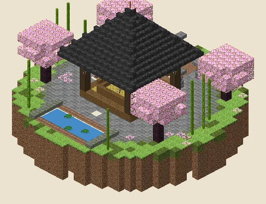
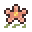
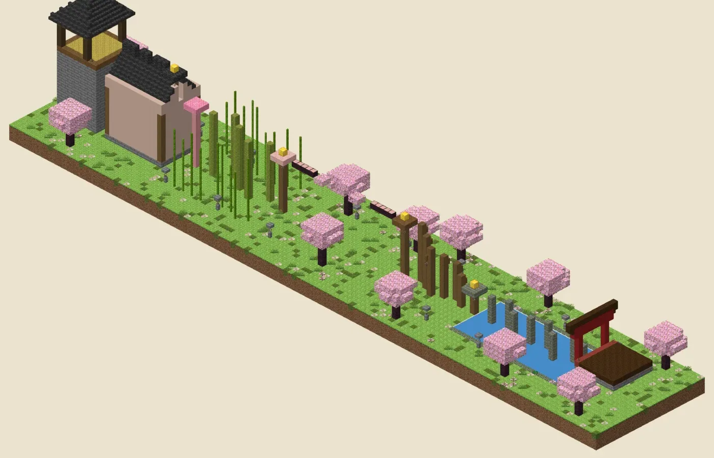

茶屋游园会
管理员开一场，大家报名进小游戏世界一起玩：🪑 家具躲猫猫、🫖 碎茶盘、🌸 樱花跑酷，按名次领茶屋币和福气值
一句话
2026-11-28 起游园会对所有人开放。游戏由管理员举办：开场时全服聊天栏会冒出 [🎮 加入] 按钮，点一下（或 /youxi join）就报名，被送进专门的小游戏世界。进场前背包整份存档，离场原样还原，东西不会丢、也不会多。玩完按名次发 茶屋币 + 福气值。
怎么参加
- 等开场广播：管理员开放报名时，聊天栏会出现「🎮 加入」「❔ 玩法」两个按钮。同一时间只有一场。
- 报名：点
[🎮 加入]，或输入/youxi join。也可以/youxi打开游园会菜单点报名。 - 候场：进场后先到 候场茶亭（锦鲤池、樱花、竹子、石灯笼），手上只有 📖 玩法 和 🚪 离开 两样东西。从茶亭掉下去会被拉回来。
- 开始：人齐后管理员点开始，10 秒倒计时，所有人被送进场地。
- 结束：一局结束自动还原背包和位置、发奖。中途想走就
/youxi leave或右键 🚪 道具。


什么时候报不了名
下面这些情况报名会提示原因，身上东西不动：飞行 / 鞘翅滑翔中（先落地）、睡觉、旁观模式、在星渊秘境里、已经在小游戏世界里、死了还没重生。骑着坐骑会先自动下来；开着的界面会先关掉（光标上的东西回背包）再存档。
三个小游戏
🪑 家具躲猫猫
2–16 人，一般 2 轮，每轮约 3.5 分钟。场地是 🏯 鼠鼠大宅：地下储藏室、一楼九间房绕着露天中庭、二楼回廊和露台，还有阁楼；屋里摆着两百多件家具馆里那些 3D 家具。
- 躲藏者变成其中一件家具（人本身隐身，别人只看得到家具）。右键换下一件、左键换上一件。
- 蹲一下 = 定住：自动对齐到格子正中、朝向对齐，和摆设一模一样；再蹲一下解除。走动中的家具会「滑」，一眼露馅，挑好位置再定。
- 👻 灵魂出窍：定住后右键第 3 格道具，家具本体留在原地，人变成会飞的灵魂飘出去偷看（离本体 14 格内，穿不了墙）；再右键立刻回体。本体被敲中、被揪出或回合结束会自动回体。灵魂状态不能嘲讽、不能换家具。
- 找茶人先在茶水间闭眼 30 秒，然后拿 🎋 茶筅敲家具：敲中躲藏者扣 1 点茶香（每人 3 点，扣光 = 被揪出来，变成找茶人一起抓）；敲到真家具会烫手（慢 2 秒、扣 1 分），别乱敲。
- 🔔 听音铃（25 秒一次）：告诉你最近的躲藏者在 6 / 12 / 20 格内还是很远，还会说在楼上、楼下还是同一层。
- 🎺 嘲讽（15 秒一次）：家具「吱～」一声冒音符，+3 分，定住时 +5 分。越皮越高分，但会暴露位置。
- 每 30 秒所有躲藏者冒一缕茶烟（最后 1 分钟每 15 秒），躲死不动也会被发现。
- 所有家具都是实心的，钻不进去；定住的躲藏者也一样挡人。
- 剩余时间、还剩几位躲藏者、茶香、自己的分数都在屏幕顶上的 Boss 栏；听音铃结果等提示在动作栏停留几秒。
计分：躲藏者活着每 10 秒 +1、撑到一轮结束 +15；找茶人敲中 +2、抓到 +8、敲错 −1。两轮后按总分排名，第 2 轮优先让没当过找茶人的人当。找茶人人数约为总人数的四分之一（至少 1 人）。
🫖 碎茶盘
1–16 人，一般 1–2 分钟，最多 4 分钟。场地是 温泉茶会：一池冒热气的温泉上空悬着三层茶盘，🎋 竹编茶盘 → 🔵 青花瓷盘 → 🌸 樱釉陶盘。
- 踩过的瓷砖 0.4 秒后裂开掉进温泉，站着不动脚下也会塌，只能一直跑。上层塌了掉到下层还能接着玩；掉出最底层、飞出茶盘范围或掉进温泉 = 出局，转观战。
- 盘上隔几秒冒一个发光茶点道具，走过去就捡：
- 🥄 茶匙：拿着打人能把对方拍飞（3 次）；空手推人只有一点点击退。
- 🎋 竹叶：空中再按一下空格 = 二段跳（3 次）。
- 🍡 团子：右键在脚下补一块 3×3 茶盘，救命用（1 次）。
- 开局 60 秒后「♨ 茶汤沸腾」：每秒随机裂砖，越往后裂得越多，不会拖成僵局。
- 最后站着的人赢，名次按出局顺序倒过来；4 分钟到了还站着的人并列。
🌸 樱花跑酷

1–24 人，最多 5 分钟。所有人一起从鸟居出发：① 踏石过溪 → ② 灯笼阶梯 → ③ 樱花枝桥 → ④ 竹林 + 花瓣弹板（一踩弹上屋顶）→ ⑤ 瓦屋檐 → 🏁 终点茶亭。- 每段尽头有检查点（金色压板 + 纸灯）。掉下去 / 掉进小溪自动回最近的检查点（计时不停）；🏮 道具随时回检查点。
- 动作栏实时显示用时（精确到 0.1 秒）和当前名次。比赛中玩家之间不会互相推挤。
- 按到终点的用时排名，全部到了提前结束；时间到没跑完的按到过的检查点、再按到那儿的时间排。一个检查点都没到的不算名次、没有奖励。
- 个人最好成绩和全服纪录会存下来，破纪录全服播报；
/youxi top看前 10 名。


奖励
按名次发，每局只发一次：
| 名次 | 茶屋币 | 福气值 |
|---|---|---|
| 🥇 第 1 名 | 200 | 15 |
| 🥈 第 2 名 | 120 | 10 |
| 🥉 第 3 名 | 80 | 6 |
| 其余坚持到最后的人 | 30 | 2 |
- 上表是标准档。管理员开局时会选档位：小份 ×0.5 / 标准 ×1 / 丰厚 ×1.5（丰厚第 1 名 300 币 + 23 福气），报名广播里能看到。
- 练习局不发奖：开局不到 2 人、或排上名次的不到 2 人。
- 每人每天（北京时间）前 8 局有奖，之后照常能玩，只是不发奖。
- 并列的人各拿那个名次的奖。中途离开 = 弃权，没有奖励；已经出局（碎茶盘掉下去、跑酷到终点）再离开，名次照算、奖照发。
- 🏮 游园魁首称号：在 3 人以上的有奖局里拿第 1 名解锁，到「我的称号」
/title里戴。 - 当时没发成功的奖励会在你下次进服时补发。
背包安全
- 进场前把背包（含盔甲、副手）、血量、饱食、经验、药水效果、位置整份存档，存好了才清空背包送你进场；存不了就不让进，东西还在身上。
- 场内：冒险模式、不掉血、不饿、不能丢 / 捡东西、不能放 / 拆方块。
- 离场一律原样还原：一局结束、自己离开、被请出场、下线、服务器重启，甚至崩服后再进服，都会还原成进场前那一份。小游戏道具还原时一起消失。
- 比赛期间从别处收到的东西（邮件、活动奖励等）还原后会加回背包，背包满了掉在脚下，聊天栏会告诉你。
场内规矩
- 小游戏里只能用
/youxi和私聊（/msg/tell/w/r等），别的指令和传送都会被拦下。 - 出局后是旁观模式，右键不了道具：点聊天栏里的
[🚪 离开]或输入/youxi leave。 - 小游戏世界里的位置不能用
/back回去，见 死了怎么办。 - 比赛中管理员可能隐身旁观拍视频，不占名额、不影响比赛。
指令
/youxi（别名 /小游戏 /游园会 /xiaoyouxi /minigame /yy）打开游园会菜单：现在的一场、三个游戏卡（玩法、我玩过几局、拿过几次第一、跑酷最好 / 全服纪录）、报名 / 离开、我的战绩、跑酷排行。
| 指令 | 别名 | 作用 |
|---|---|---|
/youxi join | jiaru / 加入 / baoming | 报名（也可以直接点广播里的 [🎮 加入]） |
/youxi leave | likai / 离开 / tuichu / 退出 | 离开，背包和位置马上还原（也可以右键 🚪 道具） |
/youxi info [游戏] | wanfa / 玩法 | 玩法说明 + 奖励表 |
/youxi stats | zhanji / 战绩 | 我的战绩 |
/youxi top | paihang / 排行 | 樱花跑酷排行（个人最好前 10） |
开局、开始、中止都由管理员举办，普通玩家只需要报名、玩、领奖。想玩可以在 QQ 群里喊管理员开一场。
常见问题
报名后背包空了，东西去哪了？
存档里，离场时原样还原。下线、服务器重启、崩服都会还原，不用担心。
一个人能玩吗？
碎茶盘和樱花跑酷 1 人就能开（躲猫猫至少 2 人），但不到 2 人算练习局，没有名次奖励。
为什么这局没发奖？
可能是练习局（不到 2 人排上名次）、你今天已经领满 8 局、或者你中途离开算弃权；跑酷一个检查点都没到也没有奖励。